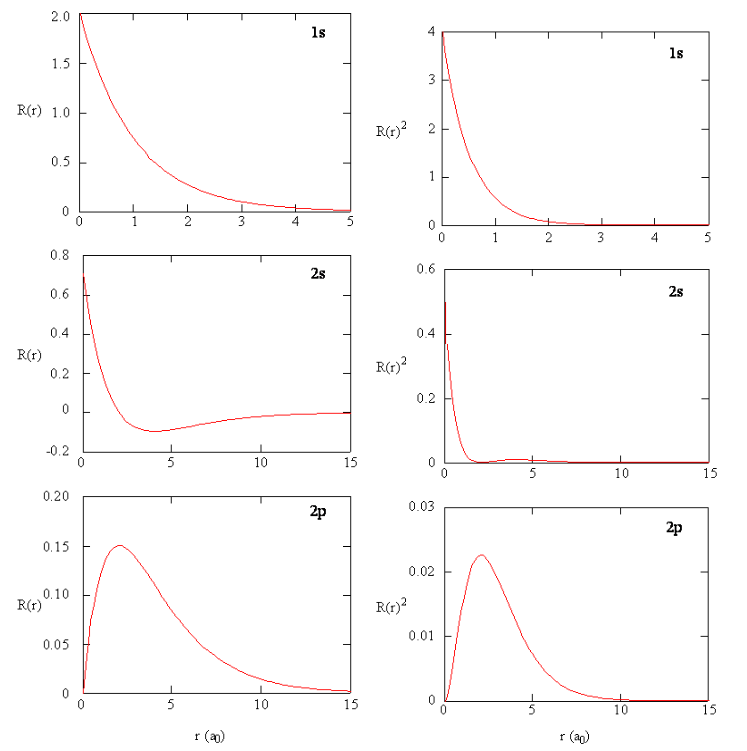
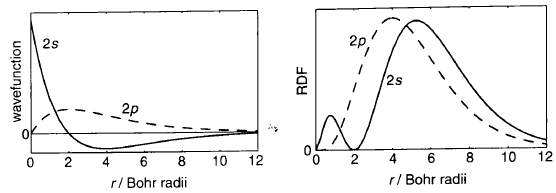
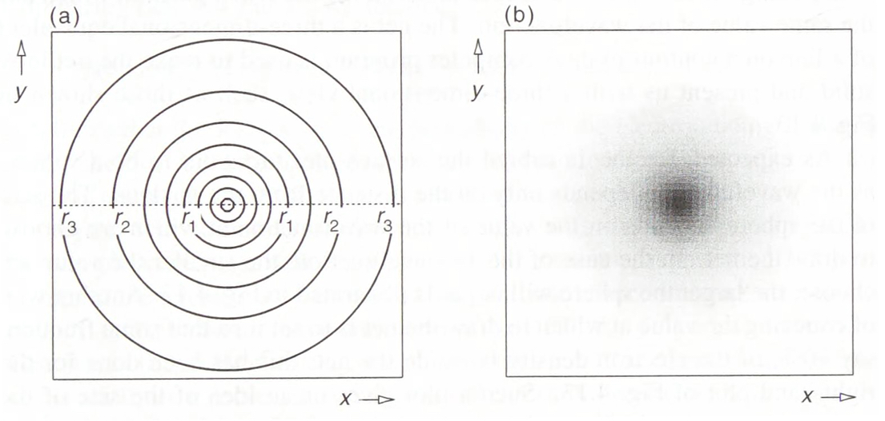
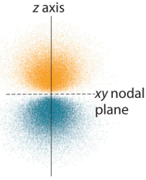
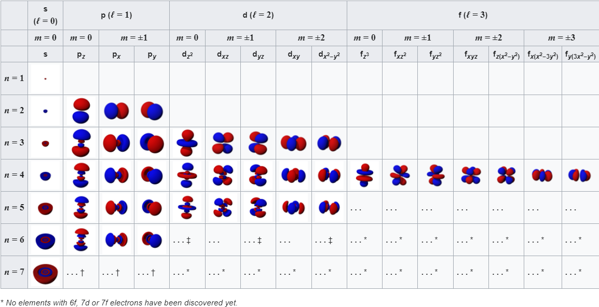

Semiconductors
How has this material changed our modern world?
SemiconductorsQuantum mechanical phenomena are essential in creating a comprehensive picture of the atom. The first thing to understand is that this quantum model depends entirely on probabilities which is in contrast to the widely understood Bohr model. This model predicted defined shells in which electrons can orbit around a nucleus made up of protons and neutrons (much like the planets around the sun). We now know the idea of set orbits is false and that electrons surround the atom in a much less predictable way as dictated by each electron’s wavefunction. From the wavefunction we can identify regions of space in which we can find electrons called “Orbitals”. This article focuses on how quantum numbers are used to identifying the possible positions of electrons and, as a result, will uncover the true shapes of orbitals in an atom.
The shape and size of an orbital is determined with the use of wavefunctions. These functions can be used to calculate many details of systems from the momentum of a particle to the motion of ripples on a body of water. The functions that we will look at only concern the calculation of electron distributions. Each orbital has a unique wavefunction associated with it whose parameter (numerical input) is the position in 3 dimensional space from the nucleus (using spherical coordinates) and the function outputs a “probability amplitude”. The Born interpretation of the wavefunction imagines a very small box centred at coordinates (\(r, \theta, \phi\)). The probability of finding an electron in this small box is proportional to the square of the wavefunction at this point. So it is understood that the wavefunction squared is the probability density: P(electron in box) = \((wavefunction)^2\) * volume of the box. Each wavefunction is the product of 2 parts: the angular part and the radial part, however, the full details of how each individual wavefunction is derived is not covered in this article.
Another useful way of using the electron density is by imagining a very thin shell centred at radius r from the nucleus. This gives us the probability that an electron is a certain distance in any direction around the nucleus which is called the radial distribution function (Fig. 2). RDF = \((wavefunction)^2\) * \(4 \pi r^2\) so the probability of an electron being in a certain thin shell around the nucleus is the product of the RDF and the thickness of the shell. For a 1s orbital, the RDF has a maxima at r = 1 (53pm) which is the same distance as the Bohr radius: the lowest energy orbit radius in the non-quantum Bohr model. This shows parallels between the 2 models but it can already be understood that the quantum model has many more complications.
Fig. 1: The graphs of wavefunctions of various orbitals (left) next to the probability density of the respective orbitals (right).\(^{[1]}\)
Fig. 2: Comparison of wavefunction graphs and RDF in 2s and 2p orbitals\(^{[1]}\)
Quantum numbers are quantities that represent all possible states of a system. Four of these numbers are required to describe the position, movement and energy of each electron in an atom. The combination of these quantum numbers for all electrons in an atom is described by a wavefunction that complies with the Schrödinger equation.
The first number used is the principle quantum number (n) which can take the value of any positive integer. This value primarily dictates the energy level of the orbital (so orbitals with the same n form a shell). The equation describing this energy is: \(E_n = \frac{-R_H}{n^2}\) where \(R_h\) is the Rydberg constant and the energy is given in electronvolts (energy is 0 when no interaction between nucleus and electron i.e. infinite distance between them). This shows the smaller the principal quantum number, the lower the energy is and because systems typically assume the lowest energy state, electrons fill the lowest energy orbitals first. The principle quantum number also indicates the most probable distance of the electron from the nucleus and so determines the size of the orbital (Larger n values mean the electron is more likely to be further away).
The next is orbital angular momentum quantum number (ℓ) with values depending on n: from (n-1) to 0 in integer steps. This number is used in combination with n to determine the 3-dimensional shape of any orbital. These numbers are represented by the letters s (ℓ = 0), p (1), d (2) and f (3) which are used to represent different shapes of orbitals.
The magnetic quantum number (m) has values from ℓ to -ℓ in integer steps giving the m (2ℓ+1) possible values. This number describes the orientation of an orbital in space as well as the number of them within a subshell.
Finally, the electron spin quantum number (s) is independent of the other quantum numbers and doesn’t affect the 3 dimensional shape of the orbital, it only determines the spin of the electron (\(\pm\frac{1}{2}\)). Pauli Exclusion Principle states that no two electrons can share the same exact combination of quantum numbers which explains why the number of electrons in each energy level is limited. The two possible spin quantum numbers allows up to two electrons to occupy each orbital.
We now have all the components necessary to describe the shape and size of an orbital: Starting with a 1s orbital its wavefunction (\(\Psi_{1s}(r) = Ae^{Br}\) where A and B are constants\(^{[3]}\)) shows that the shape is entirely spherical as it only depends on distance r from the nucleus and not any angles. The angle independence is reflected in the value of m equalling 0 so there is only one possible orientation. This shape is visualised with cross-sectional diagrams or surface plots as shown (Fig. 3). The RDF shows that the most likely position of the electron is a specific distance from the nucleus (1 Bohr radius). Moving to the next shell introduces more complications and the wavefunction now gives rise to a radial node in the 2s orbital. This is explained by the wavefunction graph which intersects with the x-axis at a certain r (refer to Fig. 1), the probability of finding an electron here is 0. Although the wavefunction is negative for some values, it is squared when used as a probability density so electrons are still able to be found further than the radial node. There is another type of node which presents itself in the 2p orbital: angular nodes. These occur as a result of the aforementioned angular component of the wavefunction. There are 3 possible orientations of the p orbital (as when n=2, ℓ can equal 0 or 1 and when ℓ=1, m can take the values -1, 0, or 1). Focusing on the \(2p_z\) orbital we find that there is a angular node when z is 0 (xy-plane is the nodal plane) as the wavefunction is 0 for all values of x and y (Fig. 3). This arises from the \(cos(\theta)\) within the wavefunction of \(2p_z\); (\(\Psi_{2p_z} = C[cos\theta][re^{Dr}]\) where C and D are constants\(^{[3]}\)). When \(\theta\) is \(90^o\) the wavefunction is always equal to 0. Between \(0^o\) and \(90^o\), it is positive and between \(90^o\) and \(180^o\) it is negative. This creates a negative and a positive lobe of electron density. These lobes with opposite signs correspond to the phase of the wave describing the electron motion and are useful when describing molecular orbitals (those that illustrate electron position in entire molecules). It should be noted that the three 2p orbitals only differ in their angular part and despite the 2p wavelength being 0 at nucleus it is not counted as a radial node. A general pattern arises when more of these orbitals are plotted (Fig. 5). The total number of nodes is (n-1) while number of angular nodes is equal to l and the number of radial nodes is (n-ℓ-1)\(^{[3]}\). These rules give rise to many mathematically satisfying diagrams picturing the true nature of how electrons act inside of atoms.
Fig. 3: Contour and shaded plot of the 1s wavefunction.\(^{[3]}\)
Fig. 4: Shaded plot of \(2p_z\) orbital.\(^{[1]}\)
Fig. 5: Table of orbital diagrams.\(^{[4]}\)
[1] Chemistry LibreTexts. (2015). 11.10: The Schrödinger Wave Equation for the Hydrogen Atom. [online] Available at: https://chem.libretexts.org/Bookshelves/Physical_and_Theoretical_Chemistry_Textbook_Maps/Map%3A_Physical_Chemistry_for_the_Biosciences_(Chang)/11%3A_Quantum_Mechanics_and_Atomic_Structure/11.10%3A_The_Schrodinger_Wave_Equation_for_the_Hydrogen_Atom.
[2] Chemistry LibreTexts. (2013). Quantum Numbers for Atoms. [online] Available at: https://chem.libretexts.org/Bookshelves/Physical_and_Theoretical_Chemistry_Textbook_Maps/Supplemental_Modules_(Physical_and_Theoretical_Chemistry)/Quantum_Mechanics/10%3A_Multi-electron_Atoms/Quantum_Numbers_for_Atoms.
[3] Keeler, J. and Wothers, P. (2009). Why chemical reactions happen. Oxford: Oxford University Press.
[4] Wikipedia. (2024). Atomic orbital. [online] Available at: https://en.wikipedia.org/wiki/Atomic_orbital#Quantum_numbers [Accessed 19 May 2024].
How has this material changed our modern world?
SemiconductorsThe future of energy?
Nuclear Fusion